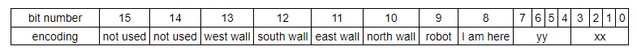
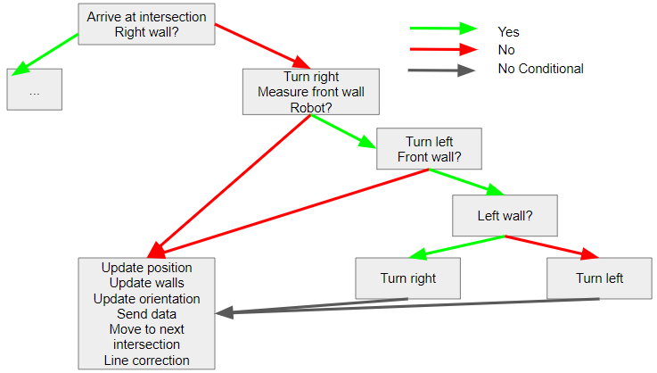

To set up wireless transmission with the robot, we used the Nordic nRF24L01+ transceiver. We were also provided breakout boards for easy connection to the Arduinos. After setting the two transceivers up, we found that using the sample code only allowed one way communication between two Arduinos. After some testing, it became clear that the knockoff Arduino wasn’t able to receive communications. We decided to proceed by hooking up the transceivers to an external 3.3v power source, which allowed us to get two-way communication.
We started with the ‘GettingStarted’ sketch provided for us. After determining that the scripts allowed successful transmission and reception, we edited the scripts so that we had one Arduino only transmit, and the other Arduino would only receive. This is important because when integrating the code with the robot sensors, there was very little memory left on the Arduino. We discovered that when we need to transmit, we need to set the radio to stop listening, and then start listening, otherwise the transmission will not be successful:
radio.stopListening();
// write to radio
radio.startListening();
To send the tile data from the robot to the base station, we had to come up with an encoding that would let us send the least number of bits possible, but still have all the data required to fill out the GUI. We settled on:

To fit this encoding, the robot had to keep track of its own orientation and the status of the three walls in front, to the right, and to the left of itself. Using that information, we could run a quick case-switch that would update the status of the walls in terms of cardinal directions, and update the orientation of the robot based off the logic tree we wrote for Milestone 2. We then bit shifted the information into a single byte, and sent that byte back to the base station for GUI processing.
The bit shifting operation was done in one line, using our saved values for each variable.
send_val = xx | (yy<< 4) | (1 << 8) | (0 << 9) | (north << 10) | (east << 11) | (south << 12) | (west << 13);
We determined the values for the walls and coordinates by tracking which sensor values were above our threshold, combined with a stored value of our orientation. We increment the position based on the orientation as well.
Part 2: Starting on 660 Hz Tone
Making the robot start was simply a matter of making a conditional statement inside our setup loop in the Arduino code. We did not want the robot to move into the main for-loop until a 660Hz tone was played, so we inserted this code:
mic_init(); // this function initializes microphone variables
while (fft_mic_loop(freq, 19) == 0); // stay on this line until mic detects 660 Hz tone
When the mic detects a 660 Hz tone, the function fft_mic_loop() returns 1 and the rest of the setup continues. We found that we need to put a speaker close to the robot in order for the robot to pick up the signal, or the signal needed to be quite loud.
Part 3: Integrating Multiple Tasks
The logic in our robot is divided into a series of “if” statements using right-wall following. We did this to decrease the number of sensors that needed to be checked. Below is an example of our logic when there is no right wall.

As shown above, values are only checked if needed. Our code currently takes up almost all of our memory, so our next steps are to streamline our logic.
Part 4: Testing
To test both whether our turning logic was correct, as well as whether the code was being sent to the GUI correctly, we arranged the maze differently than in the Milestone 2 report. Below are a photo showing the new maze setup along with two videos showing the robot and the GUI as it is updating.